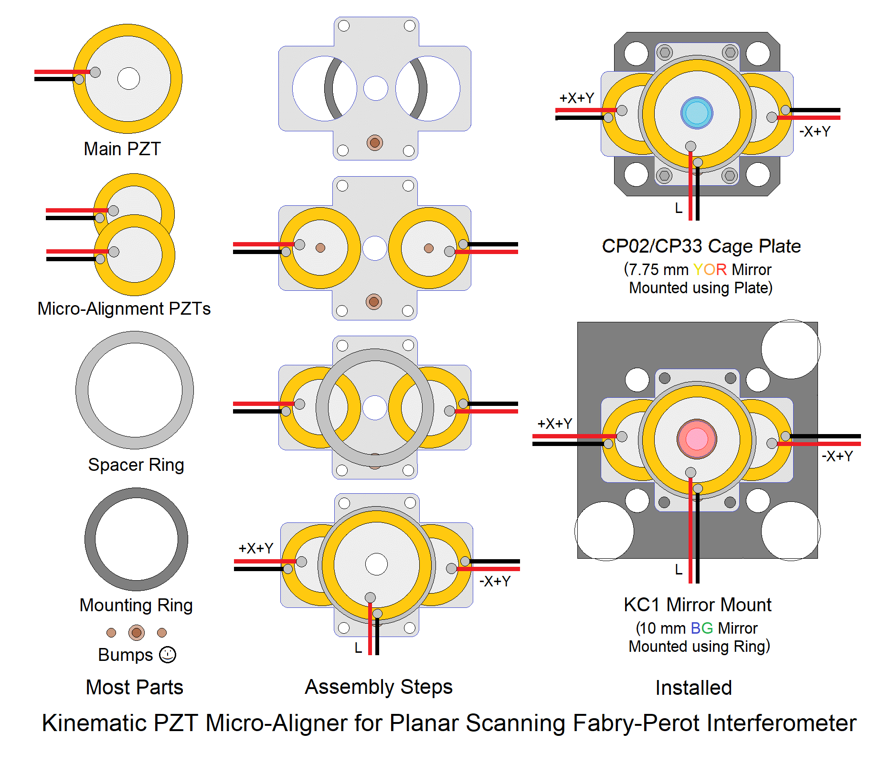
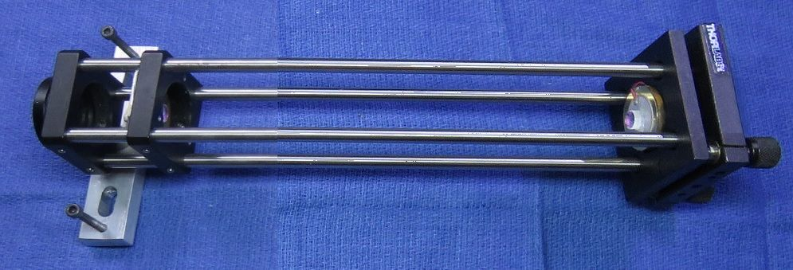

Copyright © 1994-2023
Sam Goldwasser
--- All Rights Reserved ---
Planar SFPIs have the advantage that the mirror spacing is not critical and only determines the FSR, so it can be set over a wide range. And for very large FSRs (many GHz), there is no choice as spherical mirror SFPIs cannot be built with an FSR much over 30 GHz. (And none of the spherical SFPI kits comes even close.) This is because it's difficult (or at least very expensive) to grind and polish mirrors with a very small Radius of Curvature (RoC). Planar SFPIs are easily capable of being set for FSRs higher than 150 GHz (1 mm mirror spacing) for use with multi-longitudinal mode diode and DPSS lasers.
However, alignment for plane-plane cavities is much more critical than for spherical mirror cavities (of similar length) and optimal alignment results in a strong reflection directly back into the laser, which may destabilize or in extreme cases, even damage it. Therefore, it may be necessary to add some type of optical isolator to minimize the effects of the back-reflections. But simply using a low reflectance beam sampler with high power lasers will help greatly as the reflected beam will be further reduced in intensity.
Alignment precision beyond what a typical adjustable mirror mount can provide may be required, so all the Planar kits include additional parts to construct a simple micro-aligner with 2 additional PZTs. Using it is optional, as a precision adjustable mount may be sufficient, but the parts will be present if needed. More below.
The benefit of the deluxe kits is that in addition to what's in the basic kit, they include commercial parts (mostly from Thorlabs) for the major mechanical assembly so that much of the scavanging for scrap sheet metal and other tid-bits is eliminated. The Thorlabs "Cage System" provides a rigid frame allowing for initial adjustment which can then be locked in place. The completed frame and other parts similar to what's in the planar SFPI kits are shown below.
The standard planar SFPI kits include:
CAUTION: The mirror coating is extremely delicate. DO NOT TOUCH with ANYTHING. The mirrors should be clean, requiring at most to have dust blown off with a air bulb. If cleaning is needed, ONLY use laser mirror cleaning techniques! The warranty does not cover damage to mirror surface! I suggest NOT removing the mirrors from the lens tissue until ready to install. They are just mirrors! You can purchase similar mirrors separately for use as decorative aquarium stones, but those tropical fish had better be really special. :-)
The attachment of the leads to the PZT disk is rather fragile, especially the one soldered to the metallic coated area which is only loosely bonded to the PZT material itself. So it would be a good idea to coat the area with some 5 minute Epoxy to minimize stress, and then to add a strain relief when installed in the SFPI assembly. But don't overdo it as that would restrict the motion of the PZTs.
Note that these are what are known as "Drumhead PZTs" which means that rather than expanding and contracting in thickness, they flex like, well, the head of a drum. ;-) Therefore the PZT should be secured ONLY around its perimeter near the edge.
CAUTION: While the silicon photodiodes are inexpensive, the germanium diode used in some NIR SFPIs costs $100-200. So treat it with respect! Keep in antistatic bag until ready for installation and use proper ESD precautions while handling.
The PD can be connected via shielded cable directly to the vertical input of your scope with a 10K ohm load resistor. However, it is better to connect the PD in series with the load resistor and back-bias it with a few volts (e.g., a 9 V battery). With back bias, the response (across the load resistor) will be linear up to several mW. Something along the lines of:
Shielded Cable
R Protect PD1 Center
+-----/\/\-------|<|-----------------------+----o Scope input (direct)
| 1K ohms +--------------+ |
| (Optional) | Shield | /
| | | \ R Load
| | | / 10K ohms
| | | \
| +| | - | | |
+------||||-------------+ +---+----o Scope Gnd
B1 | |
Confirm that the PD is responding to light. Room light will suffice, but a better test source is a dimmable LED flashlight. These use Pulse Width Modulation (PWM) to chop the light output and a pulsed waveform should be clearly visible on the scope.
For initial setup, leave the entire photodiode uncovered. Once there is a signal, installing an aperture to block all but the central 1 mm or so may improve resolution. For low power lasers, a preamp would be beneficial.
Deluxe kits additional parts:
Dual polarization option:
For simulataneously monitoring the orthogonally polarized longitudinal modes of a random polarized HeNe or other similar laser, this adds an additional photodiode and a small polarizing beam-splitter cube (PBSC). The PBSC splits the beam to the two photodiodes. The simplest mechanical arrangement is to attach the PDs to the PBSC directly with adhesive such as 5 Minute Epoxy. This leads of this assembly can then be slipped through the Perf. board. The PDs should be wired independently and sent to separate channels of your scope, preferably via twisted pairs. The polarization axes of your laser will then need to be aligned with the SFPI "head". Dual polarization parts are only availabe for 400-420 nm and 590-650 nm, though the required polarizing beam-splitters for other wavelengths can easily be purchased from companies like Thorlabs.
What you must provide:
The following are NOT included:
If you don't have a drill-press and are not familiar with using small drill bits and taps, it's probably best to consider some alternative. It's really easy to put holes in the wrong place at strange angles and to break drill bits and taps, which ends up making a mess because at the very least, it often impossible to extract the broken pieces. (Don't ask how I know.) Hot-melt glue or 5 minute Epoxy are also satisfactory.
The PZT/rear mirror assembly and Perf. board can be attached to the cage plate with 5 minute Epoxy, which is soft enough that it can be removed and replaced if the need should arise.
The diagram below shows most parts (except for the Mounting Plate) on the left, the successive stages of basic assembly in the center, and the installation on either a 30 mm cage plate or KC1 on the right. 20 mm micro-align PZTs are shown; 27 mm PZTs will need to be trimmed to fit between the cage rods.

The Mounting Plate can be fabricated from 1/16 inch aluminum using a drill press, nibbler tool, and metal files. There's no need for the large holes but the 20 mm PZTs must be raised slightly and attached only around their perimeter to allow them to flex, but along the entire perimeter, not just at a few spots. 5 minute Epoxy may be used there.
The "bumps" are simply narrow spacers secured with a compliant adhesive like RTV Silicone, though a small dab of 5 minute Epoxy would also be satisfactory. The bumps on the 20 mm PZTs are equivalent to the X and Y adjusters on kinematic mounts (though acting in the diagram at +X+Y and -X+Y), and the bump on the mounting plate is equivalent to the fixed pivot (which should be 0.5 mm or so taller to account for the thickness of the PZTs). Bumps can be tiny washers, ball bearings, or just dabs of adhesive that have been allowed to harden before placing the PZTs on top of them.
The complated assembly may be attached using either screws into tapped holes added to any of the cage plates or adjustable mounts, or a one inch Mounting Ring bonded to the back of the mounting plate (not included) into a 1 inch bore where present (e.g., KC1, CP35).
Prepare the aluminum spacer ring and attach the PZT disk to it. (Using the ring isn't essential but will make mounting to the Thorlabs plate slightly easier and provide a path for the PZT leads inside the plate to exit out back.)
Using a narrow file, create a notch wide and deep enough on one surface of the mounting ring for the PZT leads to pass through between the ring and mounting plate.
Use 5 Minute Epoxy to attach the PZT disk to the aluminum spacer ring around its perimeter. The active (coated) side of the PZT disk should be facing up.
The back cavity mirror must be glued to the PZT.
The following applies to the standard 42 mm RoC mirrors in the Basic and Deluxe kits. Other types may not have significant wedge and thus may not require this extra step. In addition, for the longer SFPIs, both mirrors will be on adjustable mounts so it's easy to compensate for any wedge. So the following can probably be ignore:
The 42 mm RoC mirror substrates are ground with significant "wedge" - the front and back are not parallel. Small wedge is often built in to mirrors like this to avoid reflections from the non-mirror surface re-entering the laser, but the amount of wedge here is large enough that the mirror itself would be set at a steep enough angle to matter. So correcting for it is desireable, especially if an adjustable mount is not used for the PZT/rear mirror. Therefore, it should be attached to the PZT at a slight angle to compensate. (This can be avoided by attaching the mirror to the back of the PZT but I prefer the other way since being recessed, it would be almost impossible to clean if that should ever be required.)Clean the active (top surface) of the PZT disk with alcohol before attaching anything to it.
Carefully remove the mirror from its protective lens tissue. Locate the thinnest part and put a mark on the side with a pencil. The currect angle can usually be obtained by placing a tiny piece of standard Avery sticky label under it on the thin side. :) (Very scientific, huh?) A 1x5 mm piece of label will suffice.
Center the mirror on the PZT disk taking care to orient it so the mark you added lines up with the Avery spacer (if applicable). Hold the mirror in position in some manner that avoids ANY contact with the coated surface. This is more of challenge for a planar mirror because even a flat object like a toothpick will contact the coating. Larger mirrors can be held between fingers in surgical gloves, but for smaller ones, it may be time to get creative. Don't just wing - the mirror will slip and adhesive get on everything. :( :) Apply the tiniest amount 5 minute Epoxy in 3 locations around its perimeter. Just enough to secure it. Once the Epoxy sets up, additional adhesive can be added to increase the strength, but there really isn't much stress on this thing and too much adhesive may restrict the motion of the PZT.
Set this assembly aside covered so the mirror doesn't collect dust or fingerprints.
The following assumes the use of an SM1ADn, where "n" is determined by the diameter of the mirror, threaded adapter and CP02T/CP33T cage plate. But a smooth bore 1 inch CP35 and ADnT may be substituted. As a practical matter, there is little difference in installation and it should be intuitively obvious. Remove one of the retaining rings of the adapter andd slip one of the cavity mirrors in, coated face first. Something compliant between the back of the mirror and second ring is required to (1) prevent crunching of the mirror (which is bad form) and (2) to assure that the front face seats square. A rubber O-ring is ideal, but a piece of thin wire insulation (without the wire) can be curled up to fit. Screw the second retaining ring in so it is just snug. Don't overtighten. Be particularly careful not to touch the coated surface and not to ding either surface while tightening the ring. (Tighten from the AR-coated side - damage to it is less of a disaster!) Note: Some mirrors may be too thick for the second ring to seat. In that case, use three tiny dabs of 5 minute Epoxy to secure the mirror.
Leave one retaining ring in the CP02T/CP33T cage plate and adjust it to be flush with the front. Screw the adapter with mirror in fully so it seats against the retaining ring with the mirror coating facing the front of the SFPI. Snug is fine, do NOT over tighten.

This shows an SFPI using a home-built adjustable front mirror mount (rather than the cage plate with adapter) as well as the optional iris diaphragm aperture. The rear mirror on PZT is glued to a piece of pill bottle which is then secured in the KC1 using its set-screw, though a short piece of 1" diameter metal cylinder woult be more rigid.
Note that the spacing for a given FSR using the plane-plane SFPI is twice that of the confocal SFPI. So a 2 GHz FSR is a mirror spacing of 7.5 cm (~3 inches).
Unlike the confocal SFPI, a single longitudinal mode (single frequency) laser does not provide any real benefit during setup of a planar SFPI as long as the laser being used is reasonably stable.
Ideally, an optical isolator should be used to block back-reflections but they are pricey, even on eBay. For polarized lasers, a "poor man's isolator" would be beneficial This consists of a Polarizing Beam-Splitter (PBS) and Quarter WavePlate (QWP). The beam from the laser is aligned to pass through the PBS with the QWP oriented at 45 degrees rotates the return beam by 90 degrees so it is reflected by the PBS. However, some lasers are particularly sensitive to back-reflections and even a single real optical isolator won't be enough. Also of benefit would be sampling the beam using a microscope slide or other uncoated or AR-coated planar window will reduce the amplitude of the back-reflections by the square of the sampling ratio. For example, using a 5 percent beam sampler will result in only around 0.25 percent of the input power being returned to the laser aperture. Unfortunately, for some lasers, that still may be orders of magnitude more than they can tolerate and remain stable.

With a planar SFPI, there cannot be any higher order spatial modes, so for the most part, mirror alignment adjusts the effective finesse or resolution - the amplitude and thinness of the peaks. So what is likely is that there will be some indication of lumps but nothing well defined like the photo, above. That will require fine tuning the alignment first using the KC1, and then the micro-aligner if that has been constructed. If not dialed in precisely, a series of spots will appear on the inner surfaces of the mirrors. When the normals to the mirrors share a common origin, they will be in a straight line. If not, it will be curved. The objective of the adjustments will be to compress the spots into a line and then toward the center until they collapse into a single spot at which point the displayed peaks should become tall and thin. ;-)